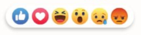

| Facebook es una red social que permite a los usuarios crear comunidades para
compartir y producir contenido, como publicaciones, fotos, videos y enlaces.
Mark Zuckerberg, junto con otros estudiantes de la Universidad de Harvard, lanzó Facebook el 4 de febrero de 2004. Facebook es una red social horizontal, es decir, se dirige a cualquier público y no tiene un uso específico. Los usuarios pueden elegir qué tipo de contenido y temas son de su interés, dentro de las normas y políticas de la comunidad. |
|  | |||||
| Nace The Facebook | - Muro + Chat + Idiomas
- Compañías crean sus páginas |
- Like
- Anuncios de Interacción - Noticias |
- Biografía + Foto de Portada
- Actualización en tiempo real |
- Reacciones
- Stories |
- Facebook Parejas |
Continuará...
Regresar al menú